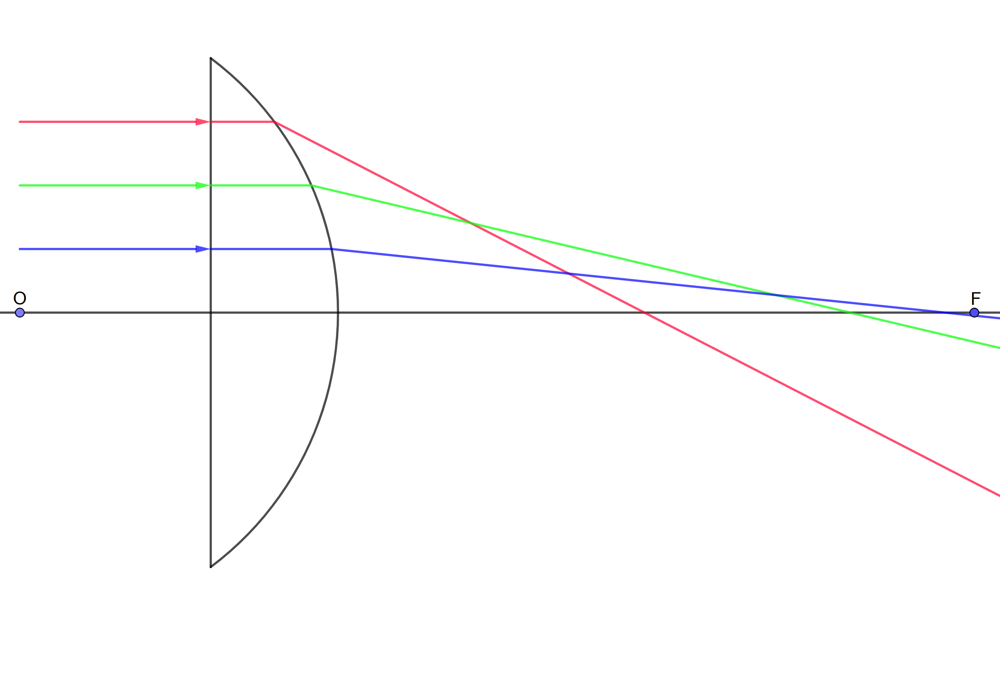
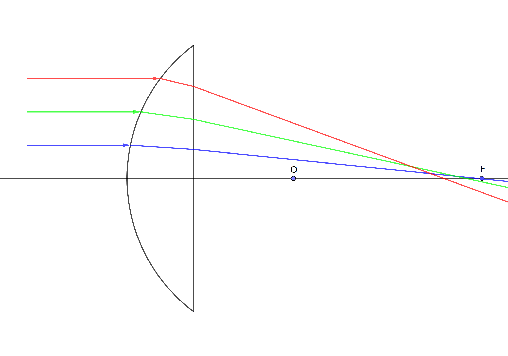
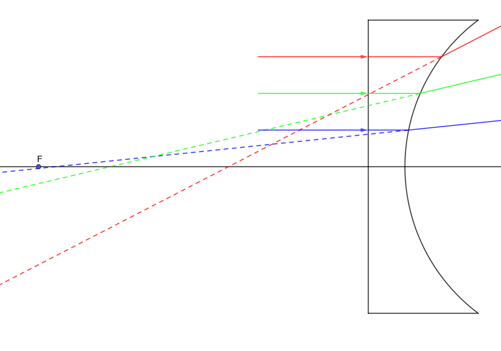
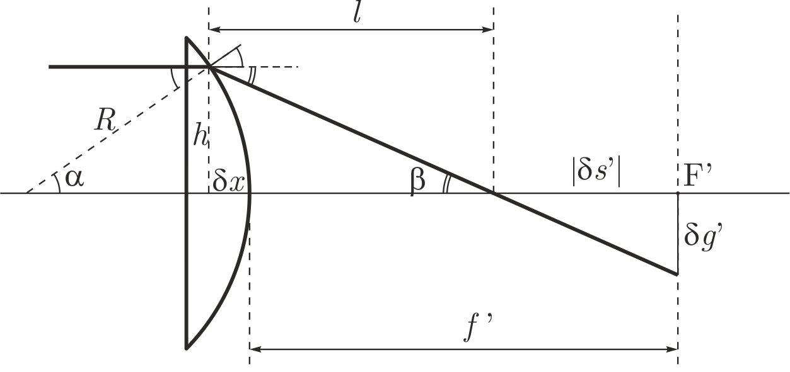
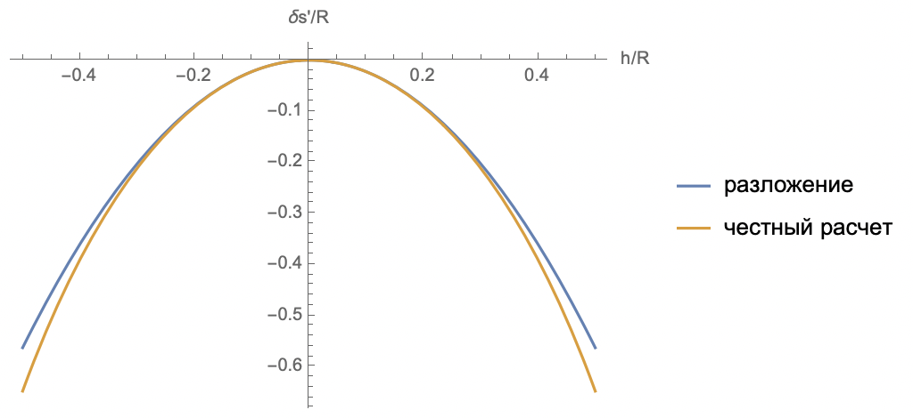
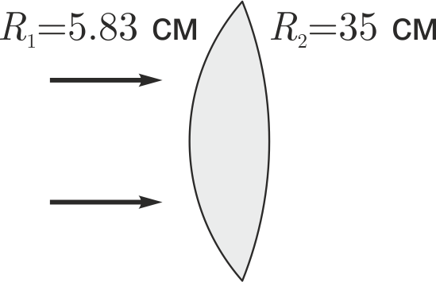
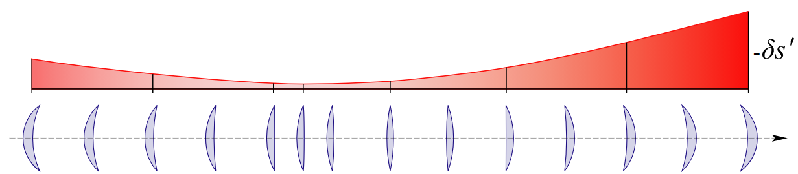
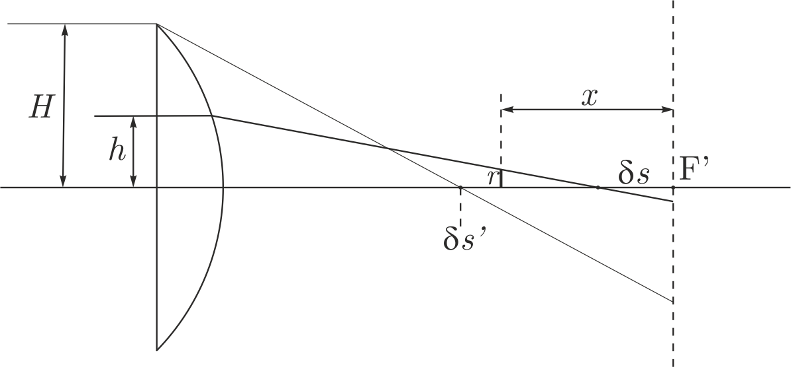
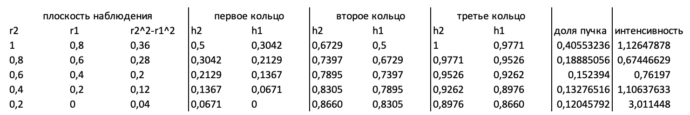

X22 (2022) — English translation
Note that the radius of the lens is 4 cm, the thickness of the lens is 2 cm, and the incident rays are drawn every centimeter from the optical axis of the lens. For a plano-convex (first) and plano-concave (third) lens, refraction occurs on only one surface. The focus position for the first and third lenses is noted using the thin lens formula: $$F = \frac{R}{n-1} = 10~cm.$$ This distance отсчитывается from bent surface. For выпукло-flat (second) lens refraction occur immediately on two surface. So that find position focus, account for, that such lens be толстой. After first refraction ray inside стекла be собираться on distance $\frac{n}{n-1}R=15~cm$ from bent surface, that is on distance 13 cm from flat surface. For refraction on flat surface image turn out in $n$ times near, that is on distance 8.67 cm. Итого, obtain focus on distance 10.67 cm from bent surface. So that construct refraction ray, use транспортир, ruler and law Снелиуса: $n_1 \sin \alpha = n_2 \sin \beta,$ where $\alpha$ – angle of incidence, $\beta$ – refraction angle, $n_1$ and $n_2$ are the refractive indices of the media on opposite sides of the boundary.



Based on the results of the constructions, we measure the maximum value of aberration. For convex-flat, the effect of aberrations is less. Below are the results, accurate to tenths of mm, obtained by calculations.
For a thin lens $$\frac{1}{f'} = (n-1) \left(\frac{1}{R_1}+\frac{1}{R_2} \right),$$ in our case $R_1 = \infty$, $R_2 = R$. From here we get the answer.
According to geometry (Fig. B2) and Snell's law: $$n \sin \alpha = \sin (\alpha+\beta).$$ Express angle through segment and refractive index: $$\alpha = \arcsin \frac{h}{R}, \quad \alpha+\beta = \arcsin \frac{nh}{R}.$$ Distance $l$ along optical axis from point refraction to point intersection with optical axis: $$l = h \, \mathrm{ctg} \beta = h \, \mathrm{ctg} \left( \mathrm{arcsin} \left(\frac{n h}{R} \right)- \mathrm{arcsin} \left(\frac{h}{R} \right) \right).$$ Refraction occur in point, смещенной on $$\delta x = R-\sqrt{R^2-h^2}.$$ Express $\delta s'$: $$\delta s' = l -\delta x -f'.$$ Substitute $l$ and $\delta x$ find ранее, substitute $f'$ from B1, we get the answer.


From the similarity of triangles (Fig. B2) we obtain $$\frac{h}{l}=\frac{\delta g'}{|\delta s '|}.$$ Consider/count aberration small $(l=f')$, we express the answer.
We count the area fractions of each ring: $$0 \div 0.2\delta g' : \quad 0.2^2-0^2 = 0.04 = 4\%;$$ $$0.2\delta g' \div 0.4\delta g' : \quad 0.4^2-0.2^2 = 0.12 = 12\%;$$ $$0.4\delta g' \div 0.6\delta g' : \quad 0.6^2-0.4^2 = 0.20 = 20\%;$$ $$0.6\delta g' \div 0.8\delta g' : \quad 0.8^2-0.6^2 = 0.28 = 28\%;$$ $$0.8\delta g' \div 1.0\delta g' : \quad 1.0^2-0.8^2 = 0.36 = 36\%;$$ From part B2 obtain $|\delta s'| \sim h^2$. Account for part B3 obtain, that $\delta g' \sim h^3.$ Consider/count fraction area ring in fall beam: $$0 \div 0.2\delta g' : \quad 0.2^{2/3}-0^{2/3} = 0.34 = 34\%;$$ $$0.2\delta g' \div 0.4\delta g' : \quad 0.4^{2/3}-0.2^{2/3} = 0.20 = 20\%;$$ $$0.4\delta g' \div 0.6\delta g' : \quad 0.6^{2/3}-0.4^{2/3} = 0.17 = 17\%;$$ $$0.6\delta g' \div 0.8\delta g' : \quad 0.8^{2/3}-0.6^{2/3} = 0.15 = 15\%;$$ $$0.8\delta g' \div 1.0\delta g' : \quad 1.0^{2/3}-0.8^{2/3} = 0.14 = 14\%;$$ If divide fraction area in fall ring on fraction area ring in фокальной plane, то obtain quantity proportional интенсивности. Be obtained qualitatively graph $I\sim r^{-4/3}$.
Theorem of sines for the triangle $MSC$ (see Fig. 2 from the condition): $$\frac{\sin \theta}{p} = \frac{\sin \angle SMC}{r-s}.$$ Theorem sine for triangle $MS'C$: $$\frac{\sin \theta}{p'} = \frac{\sin \angle S'MC}{r-s'}.$$ Law refraction: $$n \sin \angle SMC = n' \sin \angle S'MC.$$ Express from theorem sine $\sin \angle SMC$ and $\sin \angle S'MC$, substitute it into the law of refraction, we get invariant
Cosine theorem $$p^2 = r^2 + (r-s)^2 - 2 r (r-s) \cos \theta.$$ Use expansion cosine and total square $$p^2 = (r - (r-s))^2 + 2 r(r-s) \cdot \frac{ \theta^2 }{ 2}.$$ Substitute in invariant, obtain: $$\cfrac{n(r-s)}{\sqrt{s^2+r(r-s)\theta^2}}=\cfrac{n(r-s)}{s} \left( 1 - \frac{r(r-s)}{2s^2} \right).$$ Divide on «$-r$”, we get the answer.
Let us put $\theta = 0$ in the invariant of clause C2.
The invariant is a function of $s$ and $\theta$: $$f(s,\theta) = n\left(\cfrac{1}{r}-\cfrac{1}{s}\right)\left(1-\cfrac{r(r-s)\theta^2}{2s^2}\right).$$ Find value difference, account for that $\theta$ identical: $$f(s,\theta)-f(s_0,\theta) = \frac{\partial f}{\partial s}ds.$$ Since $\theta$ also small quantity, то $$\frac{\partial f}{\partial s} = n \frac{1}{s^2}$$
Let's express the angle $\theta$ through $h$: $$\theta = \frac{h}{r}.$$ Representable expression through $Q(s)$: $$\cfrac{r(r-s)\theta^2}{2s^2}=\cfrac{(r-s)h^2}{2s^2 r}=n\left(\frac{1}{s}-\frac{1}{r} \right) \frac{h^2}{2ns}=Q(s) \frac{h^2}{2ns}.$$ Following quantity инвариантны $$f(s, \theta) = f(s', \theta),$$ $$f(s_0, \theta) + \frac{n \delta s_0}{s_0^2} = f(s'_0, \theta) + \frac{n' \delta s'}{{s'}_0^2},$$ $⟦11 ⟧$ $$ Q(s_0) - \frac{h^2}{2ns_0}Q^2(s_0) + \frac{n \delta s}{s_0^2} = Q(s'_0) - \frac{h^2}{2n's'_0}Q^2(s'_0) + \frac{n' \delta s'}{{s'}_0^2}$$ Пользуемся the more, that $Q(s_0)=Q(s'_0)$, obtain expression $$ \cfrac{n'\delta s'}{s'^2_0}-\cfrac{n\delta s}{s^2_0}=-\cfrac{h^2}{2} Q^2(s_0)\left(\cfrac{1}{n's'_0}-\cfrac{1}{ns_0}\right). $$
Let's move from $s_i$ to the angles on the left side of the formula from C5: $$\alpha_i = \frac{h_i}{s_i}, \quad \alpha '=\frac{h_i}{s_i'}.$$ For passage ray between refract surface change distance from ray to optical axis, however, be conserved angle inclination: $$\alpha_i'=\alpha_{i+1},$$ $$n'_i = n_{i+1},$$ $$\delta s'_i = \delta s_{i+1}.$$ Add such expression $$ n_i'\, \delta s_i' \, \alpha_i'^2 - n_i\, \delta s_i\, \alpha_i^2=-\cfrac{h_i^4}{2} Q_i^2(s_i)\left(\cfrac{1}{n'_is'_i}-\cfrac{1}{n_i s_i}\right). $$ on the left side there are only two terms left: one corresponds to the entry of rays into the optical system, the other - entry from it. This makes it possible to calculate aberrations for complex systems.
We will use the sign convention as in part C. Then $$s_1 = \infty, \quad s'_2 = -f.$$ Position image after first refraction: $$s'_1=s_2 = r \frac{n}{n-1}.$$ Formula thin lens allows find radius кривизны $r_2$ second surface for define focus $f$ and radius first surface $r$: $$\frac{1}{f} = (n-1)\left( -\frac{1}{r} + \frac{1}{r_2} \right).$$ Since lens thin, то $h_1= h_2=h$. Left part formula C6: $$n_2'\, \delta s_2' \, \alpha_2'^2 - n_1\, \delta s_1\, \alpha_1^2 = \delta s_2' \, \left( \frac{h}{f} \right)^2.$$ $$Q_1=\frac{1}{r} = \rho.$$ $$ Q_2 = \frac{1}{r_2} - \frac{1}{-f} = \frac{n}{n-1}\varphi + \rho.$$ Assemble still together: $$\delta s_2' = -\frac{h^2}{2 \varphi^2} \left( Q_1^2\frac{n-1}{n^2}\rho + Q_2^2 \left(-\varphi -\frac{n-1}{n^2}\rho \right) \right)$$ we get the answer.
The expression in square brackets in D1 is a parabola with respect to $\rho$, the upward branch. The minimum aberration (modulo) will correspond to the vertex. From this we get the value for $\rho^*$. Note that these arguments are correct only when the parabola does not intersect the horizontal axis. After all, if it crosses, then generally speaking you can get zero aberration. Let's assume it does. Then the discriminant must be non-negative: $$D=\frac{1-4 n}{(n-1)^2}\ge0,$$ $$n\le1/4.$$ But for assemble lens $n>1$, therefore, in reality the parabola does not intersect the horizontal axis in our conditions.


The fact from part B is used that the aberration is quadratic in the distance of the beam from the optical axis $h$: $$\delta s = \frac{h^2}{\varepsilon}, \quad \delta s' = \frac{H^2}{\varepsilon},$$ where $\varepsilon$ – некий coefficient (размерности length). Here $H$ – radius lens (maximally удалённый ray), $h$ – arbitrary ray. Similarly, $\delta s'$ – maximum aberration, $\delta s$ – point intersection optical axis ray $h$. If that тут $\delta s$ and $\delta s'$ positive, отчитываются from focus in side lens. Distance $r$ from axis to point ray on distance $x$ from focus, which to refraction идёт on distance $h$ from axis one can find from подобия (рис. E1): $$ \frac{r}{x-\delta s} = \frac{h}{f}. $$ Be obtained that $r$ is function plane observation $x$ and ray $h$: $$r(x, h) =\frac{1}{f}\left (xh - \frac{h^3}{\varepsilon}\right).$$ Find, for каком $ h$ for some record $x$ be maximum $$h_1 = \sqrt{\frac{\varepsilon}{3}}x^{1/2}.$$ Maximum radius beam in dependence from plane observation $$r_{\mathrm{max}}(x) = \frac{2 \varepsilon^{1/2} x^{3/2}}{3^{3/2}f}.$$ This be obtained some огибающая, which we obtain, смотря on ray, which not intersect optical axis. Чем near to focus, the more меньше size mug, which give this ray. However, still is ray, which intersect optical axis and for approximation to focus increase size mug. Dependence distance from axis to point ray for extreme противоположного ray from coordinate $$y(x) = \frac{H}{f}(\delta s' - x).$$ Minimum кружок be there, where this effect equal $r_{\mathrm{max}}(x) = y(x)$: $$\frac{2 \varepsilon^{1/2} x^{3/2}}{3^{3/2}f} = \frac{H}{f}(\delta s' - x),$$ $$\frac{2 }{3^{3/2}} \left( \frac{x}{\delta s'} \right)^{3/2} = \left(1 - \frac{x}{\delta s'} \right).$$ Solve this equation, obtain answer $$x = \frac{3}{4} \delta s'.$$

Let us first answer the question: how does the radius of the circle ($r$) in the E1 plane relate to the radius of the circle ($h$) in the beam incident on the lens? From the previous paragraph it turns out that they are connected as follows: $$r = h |3-4h^2|,$$ here $r$ – отнормировано on maximum radius пятна $ \left( \frac{1}{4} \frac{\delta s' H}{f} \right)$ in consider plane, $h$ – on radius beam $H$. in general case one radius in plane observation соответсвует целых three radius in fall beam. Fraction area mug turn out such same, as and in прошлый times. So that find fraction beam, needed add fraction area three ring, that is quantity form $h_2^2-h_1^2$. For finding $h_1$ and $h_2$ of each ring you need to solve an equation of the third degree.
